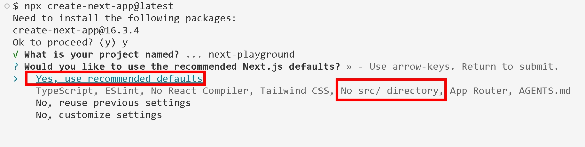

src/ 目錄之爭與檔案系統路由的雙軸制
npx create-next-app@latest 的 recommended defaults 明確列出 No src/ directory（截圖日期 2026-09-06，create-next-app@16.3.4）src 要設定很多」是誇大的。實際上用 create-next-app 勾選 src，額外設定是 零，CLI 會自動把 tsconfig.json 的 paths 寫成 "@/*": ["./src/*"]。content 加 /src 前綴」那條，是 Tailwind v3 時代的敘述。Next.js 16 預設安裝的是 Tailwind v4，v4 改為 CSS-first（@import "tailwindcss"）並自動偵測來源檔，沒有 content 欄位要改。引用文件時要看該段落是不是跟著版本更新。
defaults 的判準不是「哪個架構比較好」，而是這三件事：
app/，多一層會讓學習者一直要在腦中做路徑轉換app/，則 src/app 會被完全忽略。這是不報錯的失敗，最難 debug專案跑到一半才決定加 src，要同步改的東西：
tsconfig.json 的 paths（否則 @/ 全部解析失敗）proxy.ts 要一起搬進 src/app/ 真的刪乾淨，否則 src/app 靜默失效而 public/、package.json、next.config.ts、tsconfig.json、.env.* 這些 一律留在根目錄，不能搬進 src/。
src/ 到底幫你解決了什麼下面模擬一個專案從「剛建立」長到「上線兩年」的過程。左邊沒有 src/，右邊有。請注意看每個階段底下的兩個數字，以及最下面那行 lint／test 的 glob 要怎麼寫。
src/ 裡面——根目錄永遠只是「這個專案怎麼被建置」的設定層next.config.ts（設定）跟 components/（業務邏輯）平輩並排，兩種完全不同性質的東西混在同一層src/**，左邊要一條一條列舉，而且每新增一個業務資料夾就要回頭改一次設定（漏改就是 lint 沒掃到、coverage 算錯）src/ 的價值準確地說是什麼COPY 都寫 src/ 就好，不會因為新增業務資料夾而失效src/src/ 不會讓任何一條 import 變得不合法。下一節示範這件事。
關鍵前提：JavaScript／TypeScript 沒有 package-private 這種存取控制。
| 語言 | 模組私有機制 |
|---|---|
| Java | private／protected／package-private（不寫修飾字＝同 package 才看得到） |
| Go | 識別字小寫開頭＝套件私有，大寫開頭才匯出 |
| Rust | pub 才公開，預設模組私有 |
| JS / TS | 沒有。只要路徑打得出來，任何檔案都能 import 任何檔案 |
features/
cart/
index.ts ← 想像中的「大門」
internal/
priceCalc.ts ← 想像中的「私有」
user/
profile.ts// features/user/profile.ts
import { calcPrice } from
'@/features/cart/internal/priceCalc'
// ✅ 編譯通過，執行正常，零警告src/
features/
cart/
index.ts
internal/
priceCalc.ts
user/
profile.ts// src/features/user/profile.ts
import { calcPrice } from
'@/features/cart/internal/priceCalc'
// ✅ 一模一樣，還是通過src/ 只是把整棵樹往下移一層。誰能 import 誰，一條規則都沒有改變。三個月後你想重構 priceCalc.ts，會發現全專案有 40 個地方繞過大門直接摸進來——這件事在有沒有 src/ 的專案裡發生機率完全相同。
| 層級 | 手段 | 強制力 | 怎麼繞過 |
|---|---|---|---|
| 1 | src/ 資料夾分層 | 零——純視覺 | 不用繞，本來就沒擋 |
| 2 | eslint-plugin-boundaries | 軟——lint 報錯、CI 擋 PR | // eslint-disable-next-line |
| 3 | monorepo workspaces | 硬——模組解析失敗 | 繞不過，除非改 package.json |
my-app/
package.json # workspaces: ["apps/*", "packages/*"]
apps/
web/package.json # dependencies: { "@acme/ui": "workspace:*" } ← 有宣告
admin/package.json # dependencies: { } ← 沒宣告
packages/
ui/package.json # name: "@acme/ui"
db/package.jsonapps/admin 想 import '@acme/ui'？Node 的模組解析在 admin/node_modules 和它的父層都找不到那個套件名，直接執行期爆錯。這不是有人在旁邊提醒你不要這樣寫，是物理上跑不起來。
src/＝一個 npm package 內部的視覺整理package.json 的 dependencies 形成真實邊界apps/ 那一層，src/ 這一層的價值就被取代掉了。
routes.ts（複數）——這是 React Router／Vue Router 社群習慣的路由表檔名，屬於 config-based routing，是純前端的「網址對應到哪個元件」設定route.ts（單數）——這是 Next.js 的 Route Handler，是一個真正的 後端 HTTP endpoint| 資料夾寫法 | 名稱 | 產生的網址 |
|---|---|---|
app/dashboard/ | 一般路徑段 | /dashboard |
app/blog/[slug]/ | Dynamic Segment（動態段） | /blog/hello → params.slug = 'hello' |
app/shop/[...slug]/ | Catch-all（全捕捉，一層以上） | /shop/a/b → params.slug = ['a','b'] |
app/shop/[[...slug]]/ | Optional Catch-all（可選全捕捉） | 連 /shop 本身也會命中 |
app/(marketing)/ | Route Group（路由群組） | 不產生網址，只用來分組與套 layout |
app/_lib/ | Private Folder（私有資料夾） | 完全不參與路由掃描 |
app/@modal/ | Parallel Route（平行路由） | 不產生網址，同時渲染多個 slot |
檔名不會出現在網址裡。它是在告訴 Next.js 這層資料夾要做什麼：
page.tsx——這一段是可訪問的頁面。沒有它，這層資料夾就不是一個網址route.ts——這一段是後端 endpoint，回傳 JSON／XML／檔案layout.tsx——外框，切換子路由時不會重新掛載（狀態保留）template.tsx——外框，但每次導航都重新掛載（狀態重置）loading.tsx——自動包成 React Suspense 的 fallbackerror.tsx——自動包成 Error Boundarynot-found.tsx——404 畫面default.tsx——Parallel Route 的預設 slotapp/dashboard/ 裡直接放 DashboardChart.tsx、useDashboard.ts、utils.ts。它們既不叫 page 也不叫 route，所以永遠不會意外變成一個公開網址。這是 App Router 相對舊制最大的架構解放。
pages/about.tsx → /about # 檔名直接就是網址
pages/blog/[slug].tsx → /blog/:slug
pages/api/users.ts → /api/users舊制是「檔名＝網址」，所以 pages/ 裡不能放非頁面檔案（會變成路由）。新制改成「資料夾＝路徑，檔名＝角色」，就是為了解開這個限制。
route.ts 的定位與正確路徑| 分類軸 | 在講什麼 | 對象 |
|---|---|---|
| SSG / ISR / SSR / PPR | 這個畫面的 HTML 在哪個時間點產生 | page.tsx |
| Route Handler | 這是一個 伺服器端的 HTTP endpoint | route.ts |
route.ts 本身就是伺服器程式，它產生的是 JSON 不是 HTML，所以沒有「HTML 在哪產生」的問題。
GET handler 的預設快取由 static 改為 dynamic。以前 GET 會在 build 時被靜態化成一個 JSON 檔，現在預設每次請求都執行——所以看起來很像 SSR，但那是快取策略的改變，不是渲染模式。
app/(api)/api/ 能動，但那一層是多餘的app/(api)/api/users/route.ts → /api/users
app/api/users/route.ts → /api/users # 完全一樣的網址因為 (api) 是 Route Group，小括號資料夾不會出現在網址裡。多包這一層沒有帶來任何東西，卻多了一層目錄深度。
Route Group 的正確用途是「我要分組並套不同 layout，但不想讓分組出現在網址裡」：
app/(marketing)/layout.tsx # 行銷版外框：有導覽列、footer
app/(marketing)/about/page.tsx → /about
app/(marketing)/pricing/page.tsx → /pricing
app/(app)/layout.tsx # 登入後外框：有側邊欄
app/(app)/dashboard/page.tsx → /dashboardapp/api/<資源名>/route.ts
app/api/users/route.ts → GET/POST /api/users
app/api/users/[id]/route.ts → GET/PUT/DELETE /api/users/123app/api/v1/users/route.ts → /api/v1/usersapp/api/(public)/health/route.ts → /api/health
app/api/(admin)/users/route.ts → /api/userspage.tsx 和 route.ts，同一個網址不能有兩個 handler，會直接衝突route.ts——「自家前端呼叫自家後端」現在推薦用 Server Actions（'use server'），不用寫 endpoint、不用手動 fetch、型別自動打通。route.ts 應該留給：
app/rss.xml/route.ts、OG image）proxy.ts：跟 Vue 的 proxy 是兩回事檔名就是 proxy.ts（或 proxy.js），放在專案根目錄，有 src 就放 src/proxy.ts，規則是「跟 app 或 pages 同一層」。
// proxy.ts
import { NextResponse } from 'next/server'
import type { NextRequest } from 'next/server'
// 必須是 default export，或者具名 export 且名字就叫 proxy
export function proxy(request: NextRequest) {
return NextResponse.redirect(new URL('/home', request.url))
}
// 沒有 matcher 的話會對「每一個請求」執行，連 CSS、圖片、public/ 的檔案都會被攔
export const config = {
matcher: '/about/:path*',
}middleware.ts，函式叫 middleware，在 v16.0.0 被 deprecated。官方 codemod：npx @next/codemod@canary middleware-to-proxy .Vue / Vite 的 server.proxy | Next.js 的 proxy.ts | |
|---|---|---|
| 執行時機 | 只在 dev server | dev 與 production 都在跑 |
| 目的 | 本機開發時把 /api 轉給後端，解 CORS | 請求進入路由前攔截：驗證、redirect、rewrite、加 header |
| build 之後 | 完全消失（真實環境靠 Nginx 做） | 照樣執行 |
是 next.config.js 的 rewrites，而且它 dev 與 prod 都有效：
// next.config.js
module.exports = {
async rewrites() {
return [
{ source: '/api/:path*', destination: 'http://localhost:8080/api/:path*' },
]
},
}| 我想做的事 | Vue / Vite | Next.js |
|---|---|---|
開發時把 /api 轉給後端解 CORS | server.proxy | next.config.js 的 rewrites |
| 每個請求先驗證登入 | Vue Router 的 beforeEach（瀏覽器端，可被繞過） | proxy.ts（伺服器端，繞不過） |
不是「他們懶得支援」，是綁在骨頭裡：
"use client" ／ "use server" 這些 directive 是 React 的語言層機制，不是 Next.js 發明的renderToPipeableStream 全部是 React 內部 APIlayout.tsx ／ page.tsx 回傳的是 JSX，由 React 的 reconciler 渲染Next.js 是「React 的框架」，不是「JS 的框架」。
| UI 函式庫 | 對應的全端框架 |
|---|---|
| React | Next.js、Remix / React Router v7、TanStack Start |
| Vue | Nuxt |
| Angular | 官方 @angular/ssr、社群的 Analog |
| Svelte | SvelteKit |
| Solid | SolidStart |
| 要混用 | Astro（同一專案可同時放 React、Vue、Svelte 元件） |
app/ 與 src/app/，Next.js 會忽略 這一份。src/app。這是靜默失效，不會有任何錯誤訊息，是遷移到 src 時最常見的坑。proxy.ts ／ middleware.ts。函式名也一起改了（middleware → proxy），可用 npx @next/codemod@canary middleware-to-proxy . 自動遷移。page.tsx ／ route.ts。兩者不能放在同一個資料夾，會造成同一網址兩個 handler 的衝突。( )，稱為 Route Group。例如 app/(marketing)/about/page.tsx 的網址是 /about，(marketing) 不會出現。server.proxy（開發時把 /api 轉給後端）」的功能，是 next.config.js 的 而不是 proxy.ts。rewrites。而且它 dev 與 production 都有效，比 Vue 的 devServer proxy 更完整。src/ 之後，features/user 就不能再 import features/cart/internal 的檔案了。src/ 只是把整棵樹往下移一層，誰能 import 誰完全沒變。要擋要靠 eslint-plugin-boundaries（軟強制）或 monorepo workspaces（硬強制）。public/ 資料夾在使用 src/ 時，應該一起搬進 src/public/。public/、package.json、next.config.js、tsconfig.json、.env.* 一律留在根目錄。只有 app／pages 與其他應用程式資料夾（components、lib）搬進去。route.ts 是「SSR 專用」的檔案，靜態網站不會用到它。page.tsx 的 HTML 何時產生；route.ts 本來就是伺服器端 endpoint，產生的是 JSON。（不過 output: 'export' 純靜態輸出時，只有 GET 能被靜態產出，且 Proxy 完全不支援。）proxy.ts 若不寫 matcher，連 _next/static 的 CSS、JS 與 public/ 的圖片請求都會經過它。'/((?!api|_next/static|_next/image|favicon.ico).*)'"use client"／"use server" directive、Suspense 都是 React 內部機制。Vue 的對應品是 Nuxt，Angular 是 @angular/ssr 或 Analog。src/，這樣架構才夠嚴謹，才撐得住規模」。請寫出你的回覆，並提出真正能達成他目的的做法。src/ 只是把整棵樹往下移一層，不改變任何 import 的合法性。改完之後 features/user 一樣能直接摸進 features/cart/internaleslint-plugin-boundaries——宣告資料夾分類與允許的依賴方向，違規 lint 報錯、CI 擋 PR（軟強制）index.ts 對外，配合 lint 規則禁止深層路徑 importsrc/ 本身給出誠實評價——它有真實但有限的好處（設定與程式碼分層、lint/test/coverage 的 glob 變成穩定常數 src/**），值得做，但要用「工具便利性」的理由去說服，不要用「架構嚴謹度」的理由tsconfig.json 的 paths、CI glob、proxy.ts 位置，且根目錄舊 app/ 沒刪乾淨會讓 src/app 靜默失效
app/dashboard/settings/ → /dashboard/settings；特殊語法有 [slug] 動態段、[...slug] 全捕捉、[[...slug]] 可選全捕捉、(group) 不入網址、_folder 完全不參與路由、@slot 平行路由page.tsx（頁面）、route.ts（endpoint）、layout.tsx（不重掛的外框）、template.tsx（每次重掛的外框）、loading.tsx、error.tsx、not-found.tsx、default.tsxpage 或 route 的檔案才會變成可訪問的網址。所以 app/dashboard/DashboardChart.tsx、useDashboard.ts、schema.ts 可以直接放在功能旁邊，不會意外對外公開。相關程式碼的物理距離縮短，改一個功能只要動一個資料夾。pages/about.tsx → /about。任何放進 pages/ 的檔案都會變成一條路由，所以元件、hook、工具函式必須被趕到 pages/ 之外（典型是根目錄的 components/、lib/），造成「同一個功能的檔案散落在三個不相鄰的資料夾」。這也是為什麼舊制專案的根目錄特別容易膨脹，src/ 在舊制時代的需求也因此比較高。
route.ts 的路徑結構，並說明哪些情境「不該」用 route.ts。app/api/webhooks/stripe/route.ts # 第三方打進來的 webhook
app/api/webhooks/shipping/route.ts # 物流商回報
app/api/(public)/products/route.ts # 開放給外部/App 的公開 API
app/api/(public)/products/[id]/route.ts
app/rss.xml/route.ts # 非 JSON 回應
app/sitemap.xml/route.ts(public)／(internal) 這類 Route Group 分權限，網址仍然乾淨app/api/v1/...[id]，記得 v15 起 params 是 Promise，要 awaitpage.tsx 與 route.ts'use server'）。不用寫 endpoint、不用手動 fetch、型別自動打通，也少一層可被外部直接呼叫的攻擊面await db.query()，繞一圈打自己的 API 是多餘的網路往返(api) 這種對網址沒有影響的多餘群組裡——app/(api)/api/x/route.ts 與 app/api/x/route.ts 網址相同，前者只是多一層深度route.ts 跟 SSR 不在同一個分類軸上」。那份筆記處理的是渲染時機軸（HTML 何時產生），本篇處理的是路由角色軸（檔名決定這是頁面還是 endpoint）。兩份合看才不會把「route.ts 是不是 SSR」這種跨軸問題問錯。src/ 讓 lint／test／coverage 的 glob 變成穩定常數。那份筆記講的是打包工具在哪一層運作——glob 是打包與檢查工具的輸入，理解工具層級才知道為什麼「掃描範圍穩定」在大專案是實際的成本差異，而不是潔癖。beforeEach 在瀏覽器端可被繞過，proxy.ts 在伺服器端才擋得住；以及 Server Actions 是 POST 到當前路由、不算獨立路由。這兩點都直接涉及「憑證怎麼被夾帶、誰在哪一層驗證」，跟那份 CSRF 筆記是同一組心智模型。tsconfig.json 的 paths 設定）src/ 遷移最容易漏掉的一步就是 paths 的 "@/*": ["./src/*"]。改了資料夾沒改 paths，所有 @/ import 會全數解析失敗。npx create-next-app@latest，一次選 src、一次不選，用 tree -L 2 比對兩者的根目錄差異app/api/demo/route.ts 與 app/demo/page.tsx，再故意把兩者放進同一資料夾，親眼看它報什麼錯
src Folder ｜ 文件版本 16.3.4，該頁 lastUpdated 2025-10-17.env 留在根目錄、src/app 被根目錄 app 忽略、Proxy 要放進 src。注意：該頁的 Tailwind content 註記為 v3 時代敘述，對 Next.js 16 預設的 Tailwind v4 已不適用。proxy.js ｜ 文件版本 16.3.4，該頁 lastUpdated 2026-08-25route.js ｜ 文件版本 16.3.4，該頁 lastUpdated 2026-04-30params 為 Promise（v15.0.0-RC 起）、GET 預設快取由 static 改 dynamic（v15.0.0-RC）、Route Handlers 於 v13.2.0 引入、非 UI 回應（rss.xml）、CORS 建議。package.json 版本不同，請以該版本的官方文件為準，特別是 proxy.ts／middleware.ts 的命名。